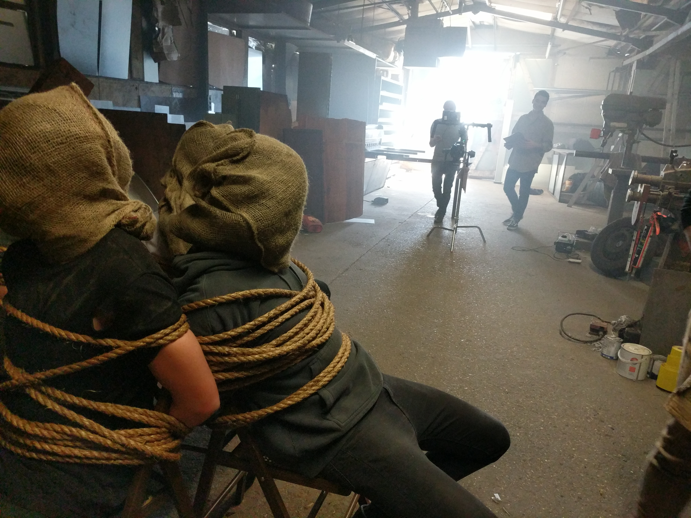
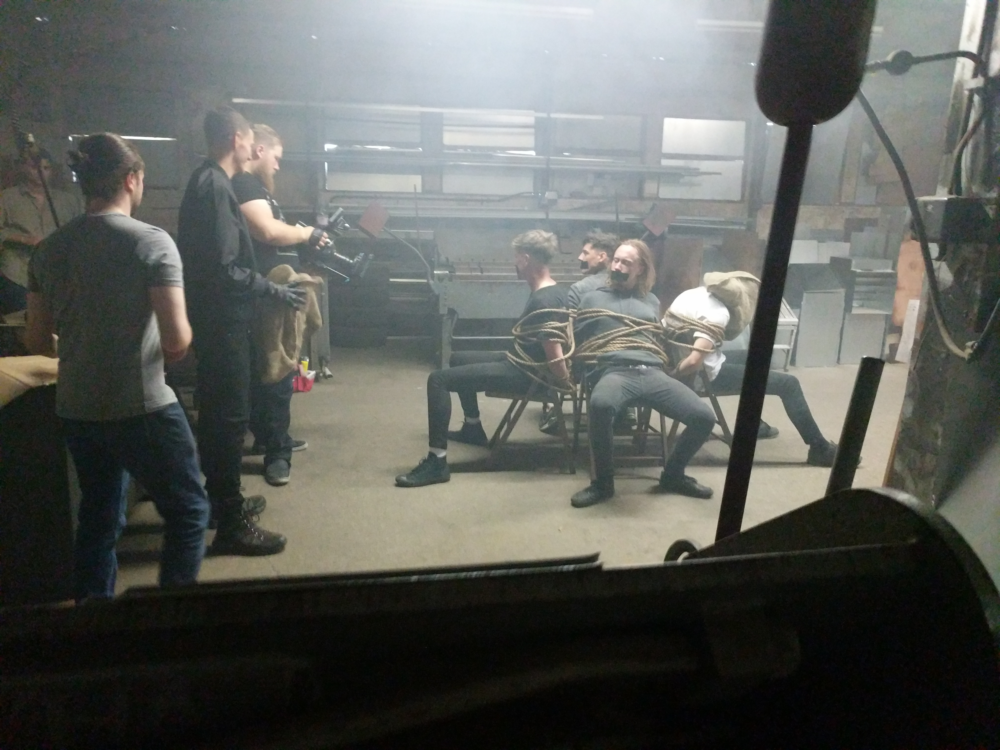
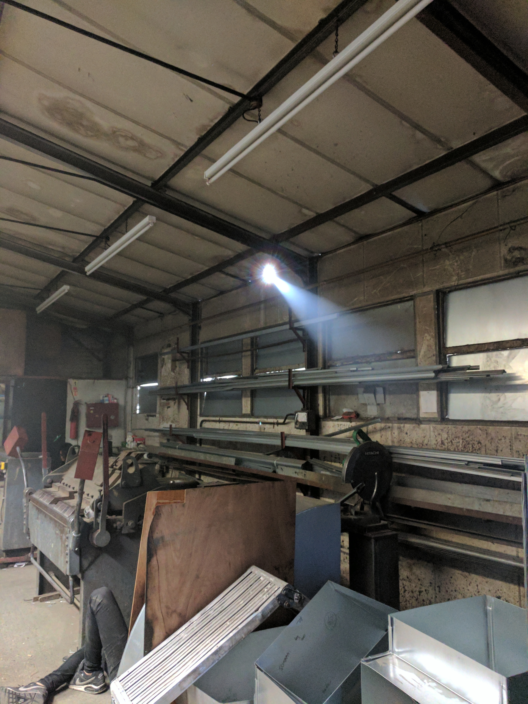
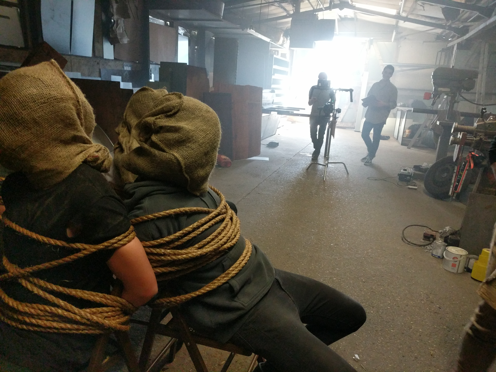
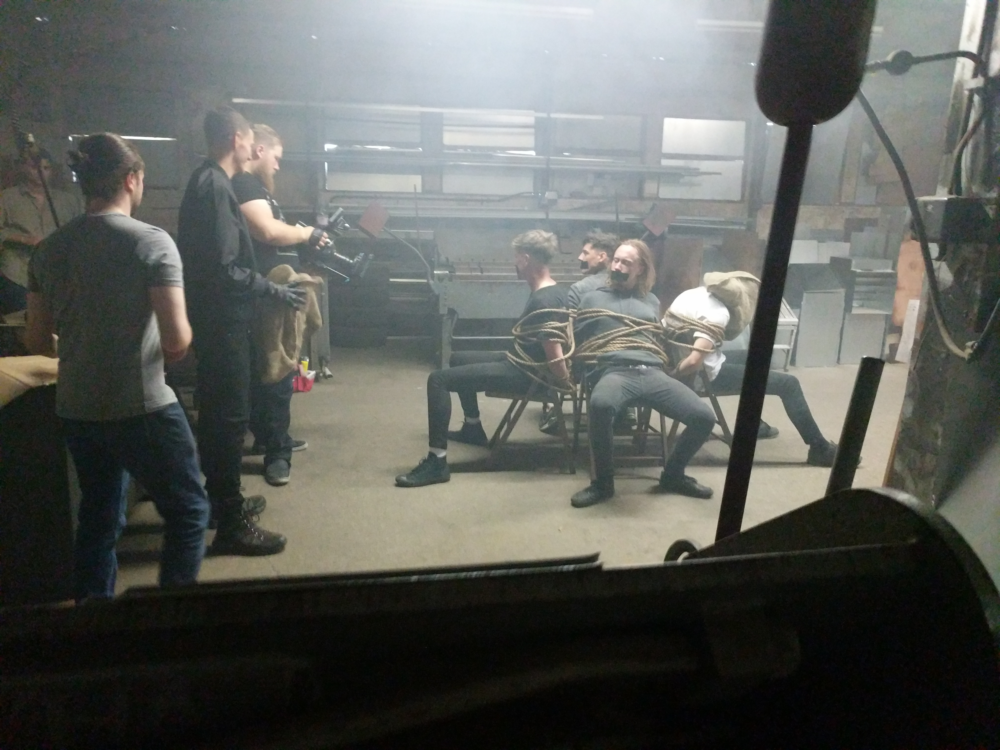
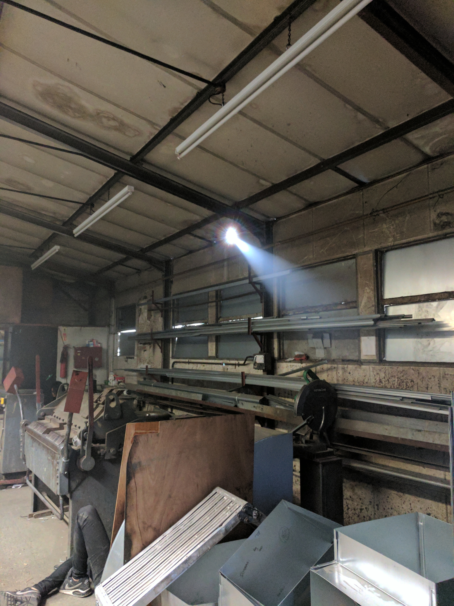

Massmatiks - One Foot In This Club
Behind the video:
This video is one that I am happy to say I worked on, but is also a great example of how a project shifts and changes as time goes on. At the start of everything, we planned and pitched the video as a whole to be a clever commentary on the behind-the-scenes world of the music industry, and there were initially going to be four doppelgangers, one for each band member. I won’t go into too much detail on the ins and outs of that initial idea (though feel free to ask me about them), but I can say that adapting to a schedule becoming shorter and budgets changing, we replanned the shoot into something more manageable, and into something that we are still proud of. In fact, this simplification seems to have been a blessing considering we were taking on the challenge of fight choreography for the first time too!
So how did this one happen at all?
In terms of the practicalities of the shoot, this was a pretty simple one by design. Because the initial concept that I wrote up involved four doppelgangers (meaning tricky and time-consuming composite shots for both the shoot day and post-production), AND a fight scene, everything else was kept to a nice simple standard. We only shot in a metal workshop (I avoided injury from the many pieces of sharp metal around - go me), the only props we needed were beaten up chairs, rope, burlap sacks, a simple CCTV camera, a spooky mask, and a few miscellaneous other things, and we kept the shoot to a single day to make planning easier. Even our doppelganger was fairly easy to source thanks to genetics; the band’s singer has a brother that looks pretty similar after we got them both haircuts.
The real challenge of this shoot was that fight scene, and it was a challenge both in terms of preparing it and simply doing it. Rehearsal was key, which was made easier by the two fighting actors being siblings -- and it was made even easier still by the doppelganger being a professional fight choreographer for TV and film. Did I not mention that earlier? Ah… Either way, he and the band’s singer were a pleasure to work with, and they took direction and discussion like ducks to water. A fight scene in general, let alone one where a character is fighting themselves, was a very new undertaking for us and it was made much easier by a brilliant cast and crew. It was the big thing that we didn’t want to cut down on after we had to re-think a few parts of the video, and, in my opinion, we were right to do that; it turned out great, it fits the song, and it’s not every day that you see someone literally headbutt their own head.
As a final note, the one prop that was forgotten on the day were the pair of shoes that the kidnapper (the doppelganger) wears throughout the video. This was pretty frustrating because we have a few tracking shots of the kidnappers feet, and the wrong footwear would have been pretty distracting. Long story short, I gave up my shoes for the day because they fit the role pretty well and was left in what were pretty much genie shoes for the day. You know, the ones where the toes curl up into a little loop…? It was not magical.
Behind-the-scenes Photographs
 




